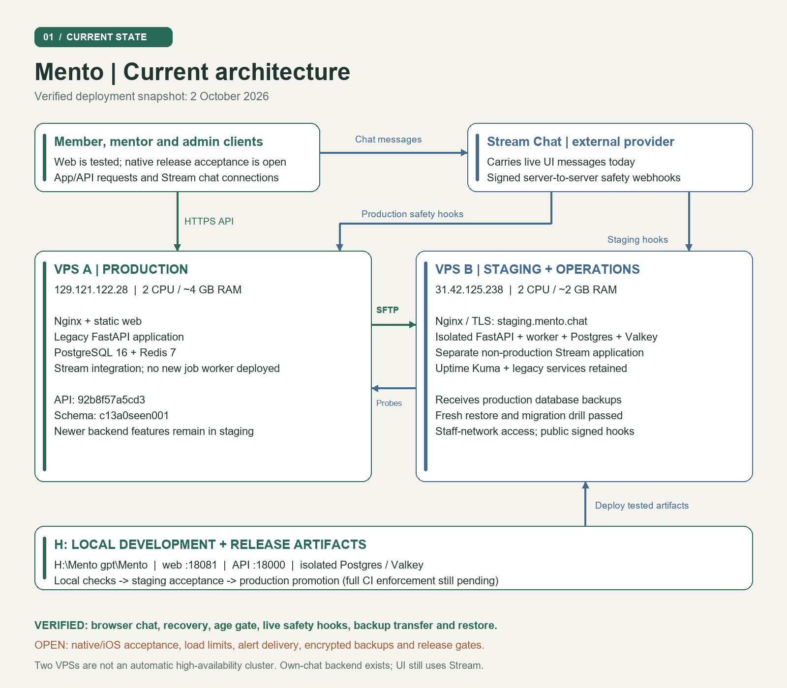
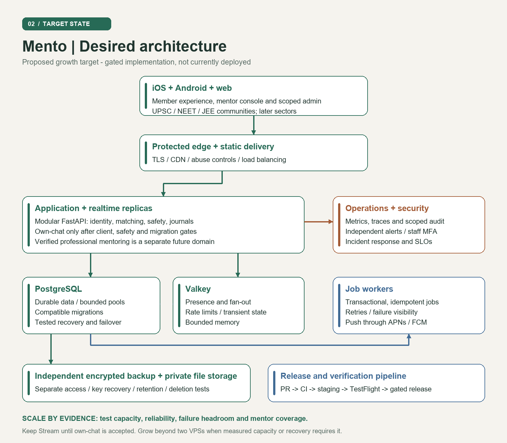

Build carefully.
Release with evidence.
The Mento cookbook: where the application lives, how the pieces connect, and the recipes for developing, testing and operating it.
Repository README · Latest progress · Release foundation PR
H:\Mento gpt\Mento. The Desktop cookbook was a read-only style reference. This guide contains no credentials. Status is a dated snapshot, not a live dashboard.Where we are
| Component | Verified state | Still required |
|---|---|---|
| Member / mentor app | Shared onboarding, anonymous identity, live Stream chat, journals and conversation controls | Full device/accessibility and release acceptance; no separate bureaucrat onboarding |
| Backend | FastAPI, SQLAlchemy, migrations and worker code; recent CI reports 708 passing tests | Production worker deployment, capacity and operational acceptance |
| Staging | Release 551345c; browser flows, signed safety checks, restore and startup-failure rollback proven | Complete GitHub staging workflow on green master |
| Production | Older release unchanged; readiness 200; Postgres and Redis healthy | Worker absent; crisis freshness 503 (last recorded hook September 28); investigate before promotion |
| Delivery | PR #13 at f870d97: API, web and release-tooling green at this snapshot | Latest native run failed at composer-send; fix before merge and master checks |
| Security | Compatible dependency patches reduced recorded audit entries from 24 to 16 | 5 high / 11 moderate remain; high entries propagate node-forge. No risk waiver |
These tests establish specific behavior; they do not establish nationwide capacity, iOS readiness or enterprise certification. Community direction is UPSC, NEET and JEE, with other sectors later. Professional mentoring remains separately scoped.
Two views of the system
Current topology
Clients use HTTPS for application APIs and connect to Stream for chat. Stream sends signed safety hooks to the appropriate API. A sends database backups to B using pinned SFTP. B provides monitoring and a separate staging database and worker. The servers do not automatically fail over for one another.


Desired architecture


- Onboarding creates a pseudonymous session; role-scoped authorization controls member, mentor and staff actions.
- FastAPI owns domain rules, matching, persisted records and moderation workflows in Postgres.
- Stream carries current UI messages and invokes signed safety webhooks. Own-chat server work is not yet a completed client migration.
- Redis/Valkey supports rate limiting and ephemeral coordination; the worker handles queued work and maintenance.
- Nginx terminates public HTTPS. Staging routes are staff-network restricted; signed hooks and readiness have explicit access rules.
Start a safe local workspace
Prerequisites: Node 22, npm, Python 3.12+, PowerShell 7, Docker Desktop. Install the API development requirements into services/api/.venv; run npm ci in apps/mobile. These instructions assume those dependencies exist.
Set-Location 'H:\Mento gpt\Mento'
pwsh -File scripts/local/workspace.ps1 init
# Separate terminals, each at the repository root:
pwsh -File scripts/local/workspace.ps1 api
pwsh -File scripts/local/workspace.ps1 worker
pwsh -File scripts/local/workspace.ps1 webExpected: web localhost:18081; API readiness http://localhost:18000/api/v1/health/ready. Postgres uses loopback 15432 and Valkey 16379. The launcher uses mento_dev; test mode uses mento_test and Valkey database 1.
.local/stream.env currently sends hooks to staging. Do not repoint it or use it simultaneously for independent local live-chat acceptance. Use a separate development Stream app or hermetic local tests. Never use production data.Where to change things
apps/mobile/app: routes and entry points.apps/mobile/components: shared onboarding, chat, mentor UI and motion.apps/mobile/theme: visual and motion tokens; respect reduced motion.services/api/app: domain rules, authorization, jobs and storage.deploy: reviewed operational scripts and environment layouts.scripts/ci: release provenance and archive checks.
Prove a change
# Repository root
pwsh -File scripts/local/workspace.ps1 status
pwsh -File scripts/local/workspace.ps1 check
pwsh -File scripts/local/workspace.ps1 test
.\services\api\.venv\Scripts\python.exe -m unittest discover -s scripts/ci -p 'test_*.py'
# apps/mobile
npx tsc --noEmit
npm run test:route
npm run test:question
npm run test:placement
npm run test:bubbleThe isolated test wrapper protects development records. Raw pytest against the wrong database can truncate mentor fixtures. Never target a serving database.
- Browser: 390 × 844, normal and reduced motion, zero page errors; test both chat participants and recovery/age gating.
- Native: Maestro must see the sent message, cleared composer and mentor reply. A successful APK build alone does not prove chat.
- Release: required jobs must pass for the exact master SHA. Skipped, stale or missing jobs do not count.
- Safety: verify signed webhook handling and deduplication, deletion, moderation and role boundaries. Do not log message contents.
Operate the two servers
| VPS A · production | VPS B · staging + operations | |
|---|---|---|
| IP | 129.121.122.28 | 31.42.125.238 (old IP: 87.232.72.79) |
| Capacity | 2 CPU / about 4 GB RAM / 96 GB disk | 2 CPU / about 2 GB RAM / 30 GB disk |
| Services | Nginx, static web, older API, Postgres 16, Redis 7 | Restricted staging API/worker/Postgres/Valkey, Nginx, Uptime Kuma, backup copies |
| Paths | /opt/mento; web /opt/mento-console | /opt/mento-staging; backups /opt/mento-backups/from-new-box |
# Operator keys must already be installed. Host verification stays enabled.
ssh -F deploy/ssh.config mento-production
ssh -F deploy/ssh.config mento-staging
# On B: read current services and candidate
cd /opt/mento-staging
sudo docker compose -f compose.yml -f ci.override.yml ps
sudo cat current-shaThe dedicated mento-ci-staging identity is a forced-command account, not an interactive administrator. It accepts only reviewed release operations and narrowly scoped HTTPS forwarding. Keep private keys out of Git, screenshots and logs.
Headroom observed 3 October: A about 90 GB free disk / 3 GB available memory; B about 21 GB free disk / 965 MB available memory. These are observations, not load limits. Keep builds on CI and reserve B's resources for monitoring and recovery.
Release through staging
Build once Verify exact SHA Production locked
- Complete PR review and current-head checks. Merge to master.
- Wait for master-push API, Test CI and Maestro checks for that exact SHA.
- Dispatch Staging Release. It builds API plus both public web configurations, records checksums and preserves a
built-candidatefor retries. - The receiver verifies the archive, backs up, migrates, starts API/worker and switches web. Acceptance verifies safety, isolated restore and browser flows using a temporary mentor.
- Only a successful staging run publishes
release-candidate. Production consumes it without rebuilding.
# After the workflow is merged and exact master checks are green:
$releaseSha = 'REPLACE_WITH_FULL_GREEN_MASTER_SHA'
gh workflow run staging-release.yml --ref master -f "sha=$releaseSha"
gh run list --workflow staging-release.yml --limit 5
# Inspect a specific run:
gh run view REPLACE_WITH_RUN_IDRetry: use reuse_build_run_id from the trusted completed staging run to reuse its immutable build. A preserved build is not acceptance evidence. Do not rebuild and overwrite a candidate under the same SHA.
Detailed commands and the production contract: RELEASE_PIPELINES.md.
Recover without guessing
Staging startup failure
The receiver restores the prior web link and API/worker image after a failed startup. A deliberate failing image proved this path, returning readiness 200 on 551345c. The fault candidate is quarantined. Do not deploy it again.
Interrupted browser fixture
A saved fixture snapshot blocks another deployment until cleanup. Use the same candidate SHA with the restricted receiver's cleanup command; it restores mentor availability and revokes the synthetic credential. Never clear the file manually to bypass recovery.
Database restoration
A backup file is not recovery evidence. The staging acceptance drill restores the latest transferred archive into an isolated temporary Postgres, then applies migrations with the candidate API image. It does not replace serving data. For disaster recovery, restore to a separate target, verify integrity and schema/application compatibility, then plan a controlled cutover.
Limits: runtime rollback does not reverse a database migration. Use expand/contract changes. Existing backups are private but still require encrypted, deletion-compatible retention and independently protected storage. Latest observed transferred backup: mento-20261002-030001.sql.gz.
Build toward the target architecture
| Stage | Work | Exit evidence |
|---|---|---|
| 1 · Delivery foundation | Integrate release workflows; full staging rehearsal; production receiver and rollback target | Exact master checks, accepted artifact, tested recovery, operational checklist |
| 2 · Reliable service | Worker operation, encrypted backups, alert delivery, independent dead-man monitoring, erasure and reconnect tests | Failure drills, restoration results and actionable alerts with named ownership |
| 3 · Measured capacity | Load test synthetic traffic; record API p95/p99, errors, pool wait, queue age and resource saturation | Documented sustainable concurrency and peak headroom, not an invented user count |
| 4 · Scale components | CDN/object storage; independently backed-up database/cache; stateless API and worker replicas behind a load balancer | Bounded aggregate DB pools, healthy failover, capacity and recovery objectives met |
| 5 · Product expansion | Community experience and verified professional roles through shared onboarding; scope future finance/paid mentoring separately | Agreed product decisions, privacy/role tests and measured pilot outcomes |
Use B fully within its limits, not by packing it until monitoring fails. Staging is not a production replica or an automatic standby. Nationwide adoption requires measured capacity, support/moderation operations and independent failure domains.
From source to TestFlight and the App Store
- Audit effective EAS environment, update channel and runtime version. Current app config includes a preview update header; production behavior must be verified.
- Verify Apple Developer membership, ownership of
com.mento.app, signing and App Store Connect access. Their readiness is not proven by repository metadata. - Build a signed iOS candidate, then test physical-device onboarding, chat, keyboard, crisis flow, recovery, deletion, background push, reconnect and accessibility.
- Prepare privacy disclosures, SDK manifests, screenshots, support/privacy URLs and honest reviewer access. Resolve anonymous-chat policy compatibility before submission.
- Use TestFlight cohorts, monitor errors, then submit and roll out gradually. App review timing is external.
Current production EAS profile disables automatic Sentry source-map upload. Symbolication and alert routing need acceptance. An Android green run is not iOS approval. Follow the enterprise/iOS roadmap.
Common operational traps
Matching returns 503
Check the correct environment and approved mentor availability. A raw test run may have cleared development fixtures. Use the isolated workspace launcher; never reseed production as a shortcut.
Staging returns 403
The app is restricted to the operator network. Check the approved network or use the pinned CI tunnel. Do not remove the boundary to make a test pass.
API is healthy but crisis health is 503
The freshness probe means no recent webhook was recorded; it cannot distinguish idle traffic from a disconnected integration. Production last reported September 28. Verify the configured webhook and synthetic safety path deliberately; do not forge a freshness timestamp.
Native message never sends
Check composer position and keyboard overlap. The corrected screen measures its offset below the header. Require visible-message and reply assertions; longer waits alone do not repair the send path.
Docker image IDs differ between machines
Classic and containerd stores can expose different native IDs. The receiver validates the checksummed archive/tag/source and records the loaded server identity before checking running containers.
npm audit suggests a disruptive downgrade
Do not use force-fix to downgrade Expo or break patched Stream seams. Review reachability and compatible fixes, validate them and retain the unresolved findings. No silent audit allowlist.
Source documents
- PROGRESS.md — dated implementation and test evidence.
- DECISIONS.md — authoritative product choices; shared onboarding and scope.
- Architecture review — audited source and server state.
- Enterprise platform plan — target design, capacity and iOS roadmap.
- Environments — ownership and isolated development.
- Release pipelines — exact gates, retries and operational requirements.
- Staging runbook — VPS access and acceptance.
Refresh this snapshot after each deployment: source SHA, schema version, checks, server roles and unresolved gates. Preserve historical evidence; do not rewrite plans as completed features.